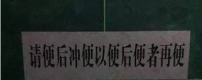

难死一大波歪果仁的汉语等级8级卷
 241
241
题目：“冬天：能穿多少穿多少。夏天：能穿多少穿多少。”问题：这句话想要表达什么意思？
这便是近日在网上火爆的“汉语8级全真卷”中的一道题目，诸如此类让老外抓狂的题目在这份试卷中比比皆是。这份试卷让不少被外语四六级考试、托福等“折磨”过的中国学子大呼“过瘾！”“中国文字太神奇了！”“老外也有这一天啊！”

1真与假
网上流传的这套“汉语8级全真卷”共分为判断题、选择题、阅读题、作文题四部分。其中让人感到抓狂、离谱的题目确实不少。
比如用“真”和“假”两个字把老外绕得团团转的：
“你的牙真好看！”“哦，那是假的。”“啊，真的假的？”“真的。”问：牙是真的还是假？
还有类似相声段子的：
甲：今天公共汽车上人多吗？乙：还行，第一站上来3个下去5个；第二站上来7个下去12个；第三站上来45个下去23个；第四站上来18个下去12个；第五站上来9个下去8个。问：乙共坐了几站？
绕口令似的：

正如网友评论所说“真是难为外国人了”。但诸如此类的“恶搞”试题，肯定不会登上新汉语水平考试(以下简称汉考)这样的大雅之堂。汉考是为测试母语为非汉语者(包括外国人、华侨和中国少数民族考生)的汉语水平而设立的国家级标准化考试，所以多数的国人不会亲身参与其中，不了解也属正常现象。

那真正的汉考是什么样子呢？让我们来看一道汉考阅读原题的一部分：
是不是有人不做梦呢？绝大部分科学家所有人都会做梦。A、相信 B、理解 C、确定 D、反应
男：把这个文件复印五份，一会儿拿到会议室发给大家。女：好的。会议是下午三点吗？男：改了。三点半，推迟了半个小时。女：好，602会议室没变吧？男：对，没变。问：会议几点开始？A、2点 B、3点 C、3:30 D、6点
2难与易
“我一次就通过了汉语考试的4级，是不是很棒？但说真的，5级和6级对于我们外国学生来说还是很难的。尤其是听力和写作，我的听力就不大好，中文每个字都有声调，有的时候我很容易混。”日本留学生姜珺说。确实，中文的声调对于大部分外国学生来说是一个难点，同一个音加上不同的声调会变成不同的字。有些字还是多音字，如果汉考的听力中加入这样的试题，可想而知外国的学生会有多么头疼。
我的朋友一次在微博上看到一篇汉考6级的阅读题并@了我。文章是介绍‘全聚德’的前世今生的。文中用‘全而无缺，聚而不散，仁德至上’12个字解释了百年全聚德的经营思想。我想即便中国人看到这样的词语也要思索片刻吧。
值得一提的是，汉考从6级开始阅读的第一部分就变成了语病题，共10题，每题提供4个句子，要求考生选出有语病的一句。“以前我觉得作为中国人，汉考题对于我们来说一定是小菜一碟。但一次一位准备参加汉考6级的美国同学问了我一道语病题，我真的是足足看了20分钟都没找出哪一句是有语病的！当时紧张得我满头是汗，现在想想都丢人，哎……”大学生韩胜凯不好意思地说。
汉考并不像一些国人想得那样容易，更何况对于接触中文时间较短的外国学生。语言是人与人进行思想交流的工具，学习一门语言的目的也并不单单为了考试，我们更应该在生活实践中学习语言，而不仅仅局限于书本之中，避免造成“高分低能”现象。
3痛与乐
“哈哈，现在外国人也要学习中文了啊！还要参加汉语等级考试！真是报了当初被英语‘折磨’的仇了！”“博大精深的中文让老外学去吧，学海无涯苦作舟！”“会不会有老外因为中文太难学而打道回府啊？”“再有机会出国，我就说中文，让他们羡慕死！”网友看完“汉语8级全真卷”后议论纷纷。
大部分网友的心理是：过去因为英语考试而痛苦，现在看到那么多外国人被中文考试难倒而解气。在悉尼留学的郎朗说：“刚来悉尼时，我被各种生单词折磨，关于食品、生活用品……尤其上课时更是纠结，老师用的好多词都是一个意思，句子结构更是多种多样，更不要说写作时的修辞方法了。相信外国人学习中文应该比我们学习英文更困难吧，哈哈！
美国《时代周刊》亚洲版称“如果想领先别人，那就学习中文吧！”当全球很多人发出“Get Ahead Learn Chinese”(抢先一步学中文)的呼声时，中文渐渐成为世界各国的第二语言，老外们为中文而“痛”也才刚刚开始。
来源：人民日报